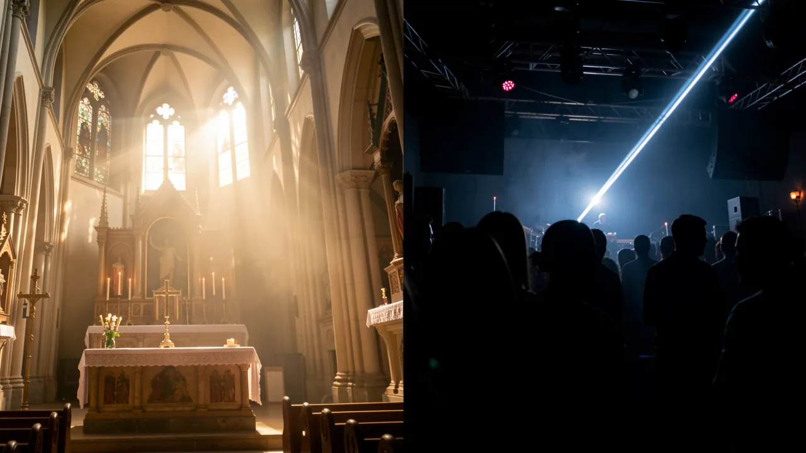

성 바울 대성당과 건축 양식: 천상의 완벽한 조화?
런던에서 가장 신성한 랜드마크 중 하나가 전설적인 나이트클럽과 협업하기로 결정했을 때, 그로 인해 발생하는 문화적 충돌은 새벽 4시에 터지는 강렬한 베이스 소리보다 훨씬 더 혼란스럽다.

영도. 현재 런던의 심장부에 느껴지는 추위의 정도입니다. 찰스 3세 국왕과 다이애나 공주의 결혼식을 지켜본 바로 그 돌담이 언젠가 땀으로 젖고 현란한 조명 아래 펼쳐지는 드럼 앤 베이스 음악 공연과 연관될 것이라고 말씀하셨다면, 저는 혹시 너무 많은 시간을 보내고 있는 것은 아니냐고 물었을 겁니다. 언더그라운드 테크노하지만 결국 우리는 여기에 있습니다.
성 폴 대성당은 그토록 ‘기득권’의 상징이어서 사실상 향과 전통으로 가득 차 있는 곳인데, 최근 엄청난 홍보 논란의 중심에 서게 되었습니다. 그 이유는 무엇일까요? 바로 런던의 상징적인 나이트클럽인 패브릭과의 파트너십 때문입니다. 패브릭은 수많은 경찰 단속과 ‘브랜드 재정립’ 시도를 겪으면서도 살아남은 곳으로, 중견 기술 스타트업보다 훨씬 더 많은 역경을 헤쳐왔습니다. 이것은 신성함과 하위문화의 궁극적인 충돌이며, 솔직히 말해서 인터넷 전체가 혼란에 빠졌다고 해도 과언이 아닙니다.

성스러운 것 vs. 신디사이저
사람들이 왜 이성을 잃는지 이해하려면, 세인트 폴 대성당이 무엇을 상징하는지 알아야 합니다. 이곳은 영국의 역사에서 매우 중요한 장소입니다. 이곳에서 국가 장례식이 거행됩니다. 이곳은 엄숙하고 진지하며, 리듬을 멈추지 않도록 하는 분위기가 강하게 느껴지는 곳입니다. 이곳은 전통과 영속성의 물리적인 상징입니다.
반면에, 팹릭은 '일시성'이 살아 숨 쉬는 곳입니다. 이곳에서는 베이스 소리가 너무 강렬해서 몸 안의 장기를 재배치할 정도이며, 조명은 요일 감각을 잃게 만들도록 설계되었습니다. 전통주의자들에게 이 협력은 단순한 '문화 교류'라기보다는 장례식 중에 'God Save the King'을 덥스텝 스타일로 리믹스하여 연주하려는 시도처럼 느껴질 수 있습니다. 이는 너무나 공격적인 분위기 변화를 가져와 런던의 전통을 중시하는 사람들에게 큰 충격을 주고 있습니다.
이것이 단순한 '나쁜 분위기' 이상의 의미를 지니는 이유
근본적으로, 이 문제는 단순히 음악에 관한 것이 아닙니다. 이는 공간의 경계에 관한 문제입니다. 지금은 [다음 내용이 필요합니다]. 디지털 융합최근 여러 기관들이 젊은 층의 관심을 끌기 위해 유행하는 트렌드를 적극적으로 활용하려는 모습을 보이고 있습니다. 이러한 시도는 아주 오래전부터 있어 왔지만, 보통 대성당이 나이트클럽과 협력하는 방식보다는 박물관이 임시 반 고흐 체험 전시를 개최하는 방식으로 이루어지는 경우가 많습니다.
이 협력 관계는 역사적인 종교 유적지와 현대 전자 음악 문화 사이의 간극을 좁히려는 시도입니다.

과도한 홍보의 문제점
이 협력은 음악과 예술을 통해 다양한 계층의 사람들을 하나로 모으는 것을 목표로 하지만, 실제로는 마치 사회 시스템의 오류처럼 느껴집니다. 그 논리(혹은 논리의 부재)가 어떻게 작용하는지 살펴보겠습니다.
- 목표: 대성당의 명성을 활용하여 파브릭에 ‘문화적 정당성’을 부여합니다.
- 현실: 나이트클럽을 이용하여 대성당에 ‘세련된 이미지’를 더합니다.
- 결과: 건물의 신성함이 단순히 ‘좋아요’를 얻기 위해 팔리는 것이라고 생각하는 많은 사람들이 분노를 표출하며 트윗을 올립니다.
이는 전형적인 예시입니다. 브랜드 정체성 위기서로 다른 원칙에 기반한 두 세계, 즉 영원한 숭배를 바탕으로 하는 세계와 일시적이고 열정적인 흥분에 기반한 세계를 연결하려 할 때, 다리가 만들어지는 것이 아니라 구조적 결함이 발생합니다.
핵심: 오늘날에는 무엇이든 '순수'할 수 있을까요?
우리는 모든 것이 협업의 대상이 되는 시대에 살고 있습니다. 고급 패션 브랜드들이 값싼 제품에 로고를 새겨 넣고, 거대 기술 기업들이 마치 여러분의 가장 친한 친구인 척하는 모습을 볼 수 있습니다. '신성함 대 속물성' 논쟁이 런던 이브닝 스탠더드 신문의 댓글 섹션에서 계속될지라도, 이 논쟁은 우리에게 더 큰 질문을 던집니다. 문화 기관들이 분열된 관심 경제 속에서 그 의미를 유지하기 위해 안간힘을 쓰는 상황에서, 넘어서서는 안 될 경계가 존재할까요? 아니면 우리 모두는 런던 타워에서 열리는 레이브 파티를 보게 될 운명일까요?
다음에 이상한 브랜드 협업을 보게 될 때 한번 생각해 보세요. 이것은 혁신일까요, 아니면 단순히 참여를 유도하기 위한 절박한 몸부림일까요?
DeepSage 계정을 무료로 생성하여 기사를 저장하고, 퀴즈 결과를 추적하며, 매일 제공되는 주요 정보를 가장 먼저 받아보세요.
이것도 마음에 드실 거예요.